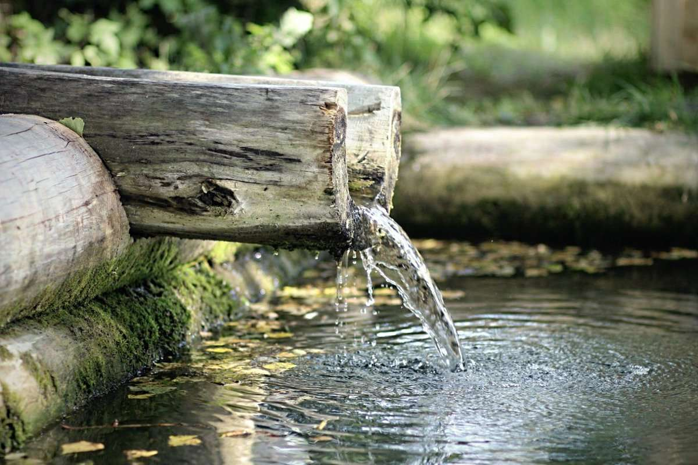

Родник (источник, ключ, криница) — естественный выход подземных вод на земную поверхность на суше или под водой (подводный источник)
Как образуются родники?
Во многих местах Земли есть источники, из которых течет чистая, прозрачная вода, которую люди называют родниковой, а сами источники – родниками. Эта вода приятно утоляет жажду в жаркие дни, а многие люди считают ее целебной. Откуда же берутся родники и почему вода в них такая чистая? Глубоко под землей, там, где расположены твердые горные породы, имеются пустые участки, которые заполнены водой. Они называются «зоной подземных вод». Вода поступает туда с верхнего слоя земли от растаявших снегов, льда, от дождей. Часть этой воды остается в верхних слоях почвы, питает корни растений, испаряется под действием жарких лучей солнца, но большая часть проникает в подземный слой и заполняет пустоты между скальными породами..
В каждом ли роднике находится полезная вода?
Родники — это источники полезной чистой воды. Так думает большинство людей, и, к сожалению, они ошибаются. Родников с водой, обладающей целебными свойствами, на самом деле очень мало. В большом проценте источников жидкость не только не имеет полезных веществ в составе, но и вполне сама может навредить человеку, вызвав у него ряд серьёзных заболеваний. Причины тому следующие: водный слой, из которого рождаются родники, находится в непосредственной близости к поверхности земли, а, значит, в него могут проникнуть вредные вещества снаружи. Особенно опасно пить воду из источника, находящегося близ свалок или заводов.